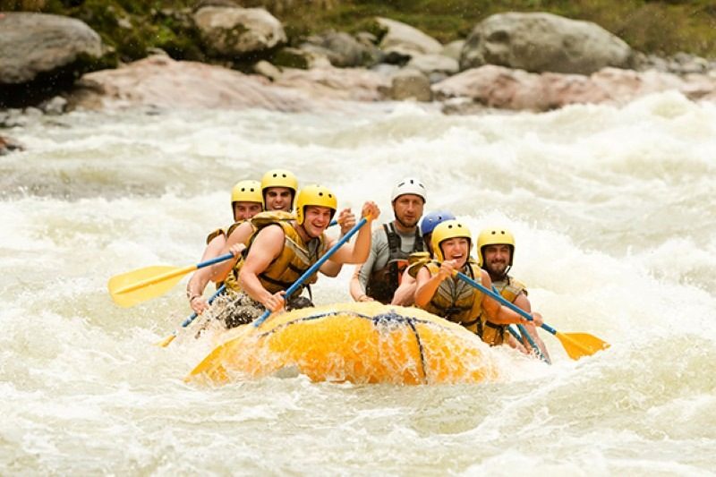

Your search for the ultimate thrill ends here. Carve through towering canyon walls, race past hidden waterfalls, and conquer nonstop rapids on the Euphoria River. When life gives you water, we say ride it!


Your search for the ultimate thrill ends here. Carve through towering canyon walls, race past hidden waterfalls, and conquer nonstop rapids on the Euphoria River. When life gives you water, we say ride it!
Founded by longtime friends and outdoor enthusiasts Wade Waters and River Banks, Dry Oar Whitewater Rafting Company grew out of a shared love for exploring the river every weekend. Today, our close-knit crew of experienced, safety-first guides is dedicated to sharing that adventure with you.